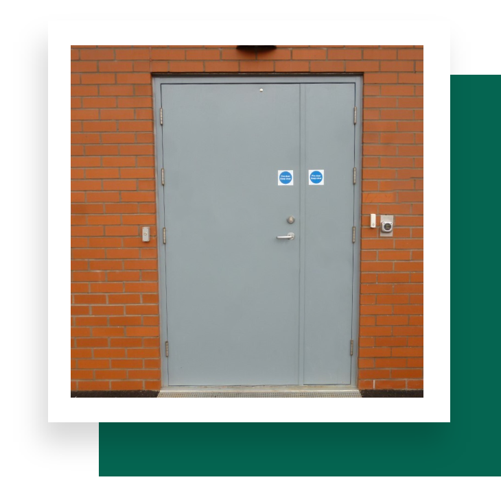

Harmonise silence: discover acoustic excellence. Engineered to reduce unwanted noise intrusion with estimated soundproofing values from 38 to 51 decibels, adapted to space size and purpose.
Our acoustic doors combine sound-absorbing properties with high-quality insulation and the security of steel construction. Acoustic seals are customised to the desired dB rating, with insulation options including dense mineral core, plasterboard or e-coustiquilt.
| Leaf | 1.5mm galvanised steel, 48mm to 55mm thick (flush or lipped astragal) |
|---|---|
| Frame | 1.5mm galvanised Zintec steel; single or double rebate |
| Core | Vertical anti-twist interlocking welded channel with dense mineral core; plasterboard or e-coustiquilt insulation options |
| Construction | Double-skinned with interlocking strengthening seams |
| Hinges | Pre-treated, protected Grade 304 stainless steel continuous hinges |
| Seals | Customised acoustic seals per desired dB rating |
| Thresholds | Wide range available |
| Finish | Powder coated (pre-treated, primed) — 350+ colours |
Eliminate external disturbances for clean recording environments.
Ensure confidentiality during sensitive conversations.
Safeguard patient privacy during consultations.
Reduce noise distractions and enhance focus.
Reduce external noise pollution at home.
Customisable dB levels for acoustic excellence in any setting.
From estimation to installation — supply and fitting support throughout the UK.